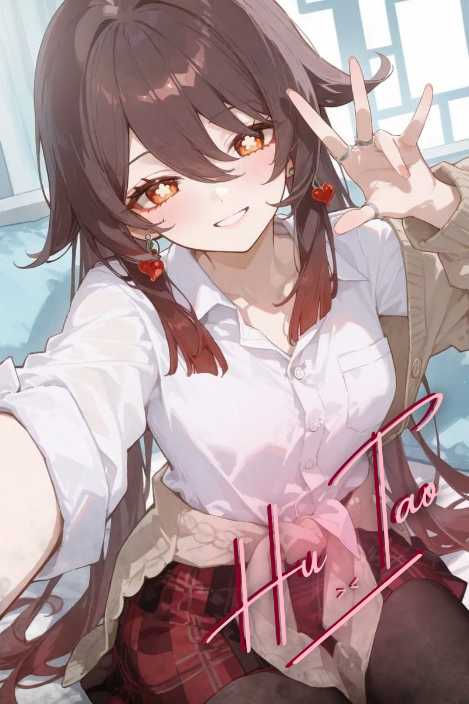
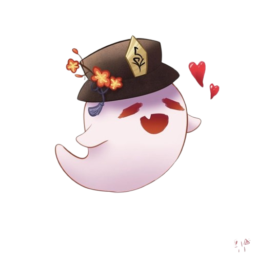

About Hu Tao <3
Hu Tao is the 77th Director of the Wangsheng Funeral Parlor, a person vital to managing Liyue's funerary affairs.
She does her utmost to flawlessly carry out a person's last rites and preserve the world's balance of yin and yang.
Aside from this, she is also a talented poet whose many "masterpieces" have passed around Liyue's populace by word of mouth.
Memorable Quotes
~ Director of Wangsheng Funeral Parlor
"If you don't have a funeral, you're not living life to the fullest!"

